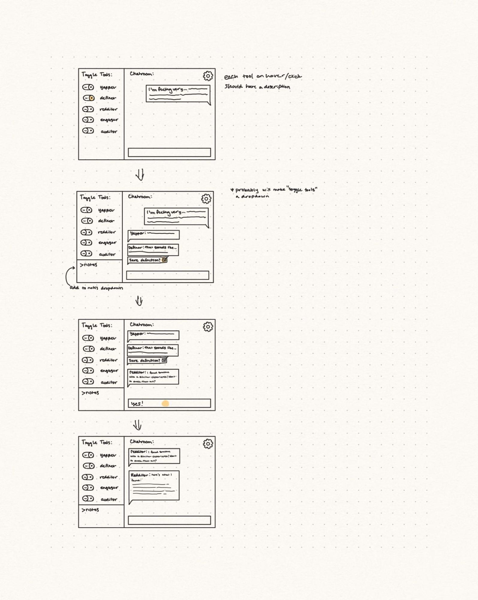
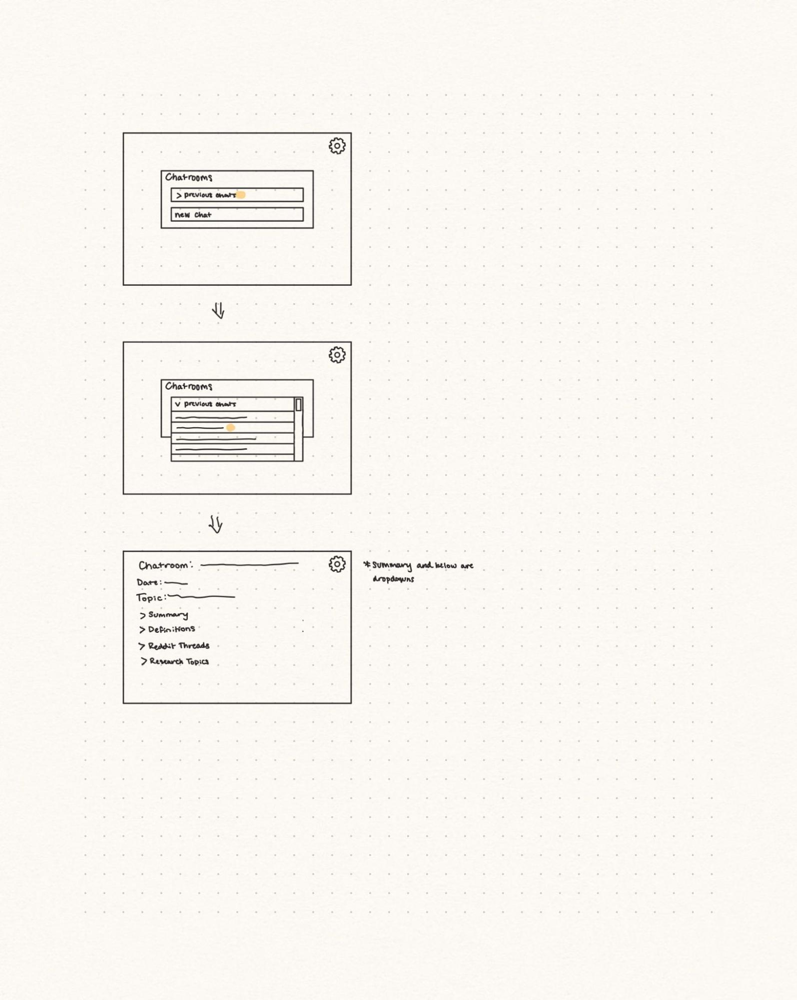
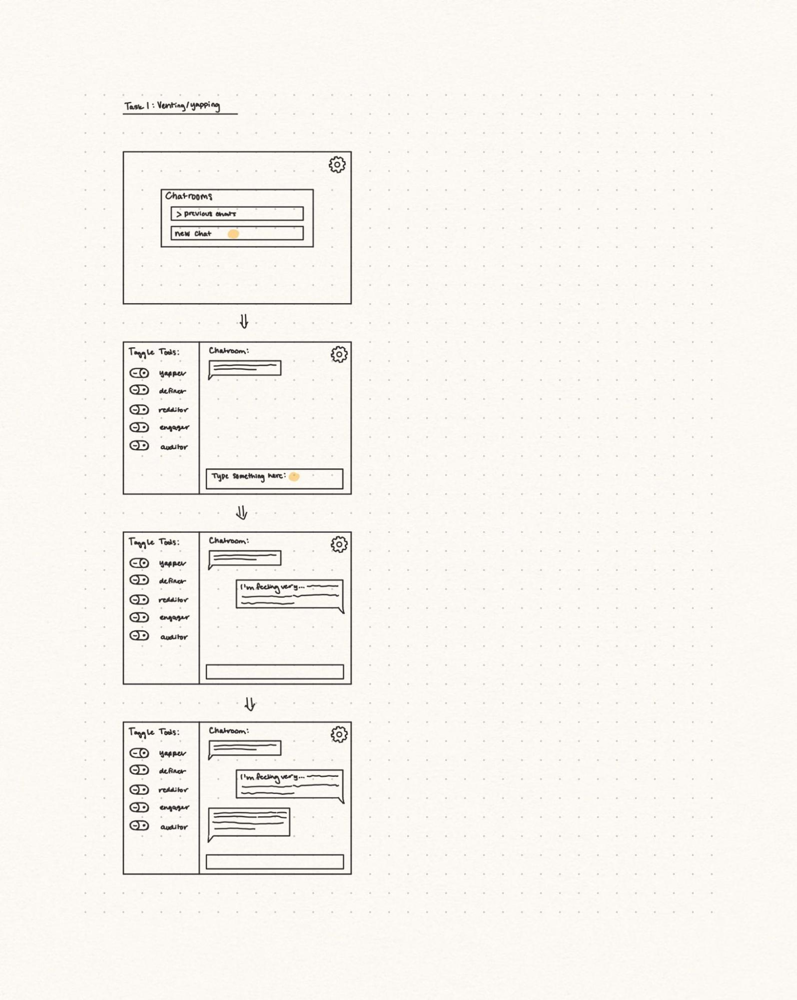

People struggling with health problems with vague/hard-to-diagnose symptoms can find it hard to identify what they’re experiencing and/or what those symptoms could be caused by. This information can be helpful in getting diagnosed, especially with chronic and rare illnesses. Likely, these people spend a lot of time in between doctors appointments feeling as if they should have some way to help themselves, and this often comes in the form of medical research. Their goal in the lens of medical professionals seems to be to self diagnose, but we argue that they are attempting to better understand their experiences, find potential methods to try that can alleviate symptoms without medicine, and build a community around them.
What we are proposing is an agnostic multi-agent medical research and community engagement tool. By agnostic, we mean that the system does not aim to diagnose or push a specific condition. Instead, the user will chat with a multi-agent system that is designed to help organize the user's thoughts, prompt the user with questions to consider, define hard to understand medical topics, explore related information, and optionally connect with communities in a responsible and ethical way. We think this solves a lot of issues because it doesn’t attempt to minimize any one issue. It is a tool kit that gives the user the best shot at whatever their individual goal is.
We found a first-person account on TikTok by the user itsjanineliz. Janine is a person with chronic health issues, and they discuss how they track symptoms and navigate doctor appointments. This meets the criteria of a first-person account because the speaker has a disability, regularly uses technology to track symptoms (specifically mentioning Migraine Buddy), and directly mentions the pros and cons of symptom tracking. Janine specifically notes in their bio that they are not offering medical advice and do not advertise or make money off of any of the products mentioned. It is a personal account of lived experience and ongoing medical care they are seeking.
Janine describes that they use symptom trackers, specifically Migraine Buddy, but explains that these apps do not work well for them due to ADHD. Instead, they use an iPad to jot down notes about their experiences and bring this into the doctor.
Janine explains that doctors themselves have a lot of control over whether you receive a diagnosis. This means that a doctor’s personal opinions and biases can directly affect your medical care. This is a massive barrier and is unfortunately one that we can’t solve with external technology. However, Janine also mentions choosing not to continue scheduling with doctors who treat her in this way, and that some doctors do find this information very helpful. This suggests that while there are still systemic barriers, having symptoms, experiences, and data to discuss with doctors can be helpful in the process of getting diagnosed.
Symptom trackers have the barrier that if a person (like Janine) has ADHD or something that doesn’t mesh well with the design of a symptom tracker, it simply will not work for them. They describe systems that work better, relying on very little to no technology (for example, writing down when they have symptoms, as well as asking a close friend to describe any changes they notice from their point of view).
From Janine’s perspective, symptom trackers seem to be mostly an inconvenient solution to a generally solved problem, as the best solution for her is simply writing things down. As a person who has used symptom trackers myself (Ally), I am completely in the same boat. The problem with symptom trackers for me (and for others I have spoken with) is that there is no habit established for using a new app. When something occurs that should be tracked, your first instinct is to do what you normally do to write things down. Additionally, if you are in pain when you need to track symptoms, you often don’t want to go through the effort of learning or navigating something new. I think this indicates that symptom tracking itself may not be the core problem we should tackle. Instead, we want this technology to function as a research and identification tool that helps users consider potential symptoms to look out for in real life and point people toward appropriate medical resources.
I also think this account shows the long-term process of getting a diagnosis when it comes to conditions that are difficult to diagnose. Janine has clearly had time to try multiple strategies and apps when it comes to tracking, and they mention speaking with many doctors. This illustrates that even someone who knows how to navigate the system and has experience doing so may still wait an extensive amount of time to receive a diagnosis. This is why I think our solution could still be helpful. People in this waiting stage will likely want to do their own research, be as prepared as possible for doctor appointments, and find ways in the meantime to minimize their pain. Having tools that help identify symptoms, explore possible causes, and try different methods to alleviate pain could meaningfully improve quality of life and reduce the helplessness that comes from waiting for an external system to provide answers.
Ally’s personal experience/thoughts (sorry this is so long, you don’t need to read this if you don’t want to!) My (Ally’s) experience with a relatively uncommon type of chronic migraine that doesn’t present like typical migraines is also shaping much of our discussion and goals. Something I found very difficult during the diagnostic process was the helplessness I felt between doctor appointments. I would bounce between doctors and wait months for appointments, only to be referred to a different specialist four months later. When I did speak with doctors, they generally focused on common concerns that had measurable physical test markers, most of which were not helpful in my case. At the beginning of this medical journey, multiple doctors told me the problem was depression, and I fully believed them for over a year. I did a lot of journaling, and one of the things that made me realize something was wrong was that, over the span of months, almost every journal entry began with: “I am more tired than I have ever been in my life. This cannot be normal.” There was a long period when I was between appointments and desperately wanted to help myself in some way, but I knew that searching symptoms online often leads to extreme results. I would type all of my symptoms into ChatGPT and repeatedly ask, “What do you think this could be?” I would review every possibility it suggested — and then carefully cross-check everything because I knew it wasn’t guaranteed to be accurate. The only reason I now know the specific type of migraine I have is because of my own research. Chronic illnesses can go unnoticed because pain and cognitive symptoms are difficult to describe and even harder to prove. For a long time, I felt like I was somehow faking my migraines. I would delay taking medication because I would tell myself, “It isn’t that bad. This can’t be a migraine. You’re just trying to get out of working.” Knowing my condition gives me confidence that I’m not imagining things, and it allows me to take better care of myself. I don’t know if I would be where I am today without that knowledge. There are also dozens of symptoms and triggers I would not have known to consider without doing my own research. That research has significantly improved my quality of life. At the same time, I recognize that I was in an incredibly privileged position. I took a year off from in-person school, took community college classes part-time, and lived with parents who helped with meals and support. Many people with chronic illnesses do not have that time or support. The reason I want to build this is because I want others who feel lost and helpless to have tools that help them access credible information, community, and direction. It isn’t perfect, and it doesn’t fix every flaw in the diagnostic process, but I believe it could reduce isolation and give people something solid to hold onto while they wait.
As this is the first listed disability justice principle, it is fitting that this project starts here. This principle begins with the statement from Sins Invalid: “We do not live single issue lives.” Intersectionality reminds us that disability is never experienced in isolation. Ableism is entangled with racism, sexism, classism, fatphobia, transphobia, and other systems of oppression. Disability justice insists that we recognize how these systems interact rather than treating disability as a standalone category.
Chronic illness especially illustrates this principle. It does not exist in a vacuum. It intersects with gender, race, income, immigration status, trauma history, and access to healthcare. The way someone’s symptoms are interpreted, believed, or dismissed often depends on these intersecting identities. For example, research consistently shows that women, particularly women of color, have their pain minimized or misattributed. The experience of illness is therefore shaped not just by biology, but by power.
What we would like to represent in this project is that chronic illness is entangled in so many personal identities and experiences. Traditional medical systems often attempt to isolate variables and reduce experiences to symptom checklists. While structure can be helpful, it can also flatten lived experience. There is a risk in trying to extract symptoms from context, as if they are purely mechanical signals detached from identity and environment.
With this tool, we are not trying to untangle someone’s intersecting identities or reduce them to a medical abstraction. Instead, we are attempting to create space for narrative first. The journaling component allows the user to describe their experience in their own language before it is translated into standardized symptom terminology. This sequencing matters. It acknowledges that lived experience precedes medical language.
How we reflect on intersectionality is the determining factor in the success of our project. AI systems can easily reproduce dominant biases embedded in medical data and online communities. If we are not careful, the tool could reinforce existing inequities rather than challenge them. How can we remain open to the possibility that there are many intermingling factors at play? Who is this system built for? Whose language is recognized as valid? Whose experiences are likely to be surfaced or ignored?
I would argue that we are not trying to untangle these threads, but rather allow them to exist and support where we can. The success of this project depends on whether we can hold complexity without pretending to resolve it. Intersectionality reminds us that chronic illness is never just a medical issue. It is social, political, and deeply personal. Our responsibility is not to simplify that reality, but to design in a way that respects it.
“People have inherent worth” is how Sins Invalid begins this principle. It is beautiful in its simplicity and powerful in its implication. It directly challenges a cultural norm that measures people by productivity, diagnosis, or usefulness. If you are not contributing in ways that society values, you are often treated as less than. Recognizing wholeness rejects that framework. It insists that people are complete, complex, and valuable beyond what they produce or what can be medically categorized.
I think this principle shows up in our project most clearly in what we are not trying to build. Diagnosis is not our goal. Traditional symptom checkers often push toward ranking possible conditions, reducing someone’s experience into probabilities and medical labels. That framing subtly communicates that clarity, certainty, and classification are what make an experience legitimate.
From our research and first-person accounts, we saw a divide between what people are asking for and what designers are building. Many people with chronic illness are not primarily asking for prediction algorithms. They want to be heard. They want their experience validated. They want language that helps them articulate what is happening without feeling dramatic or dismissed.
Recognizing wholeness means designing for the person, not just the pathology. Our journaling-first approach attempts to start with narrative rather than medical reduction. The tool structures symptoms, but it does not collapse someone into them. It avoids telling users what condition they likely have, because a diagnosis is not what determines someone’s worth or legitimacy.
Our biggest fear, and something we are reflecting on as we move this project forward, is that this is a difficult balance to strike. How do we provide clarity without reducing someone to a set of symptoms? Recognizing wholeness challenges us to design systems that support understanding without implying that a person is a problem to be solved.
It can be. Many of these technologies exist online with good intentions, while others are driven purely by capitalistic motivations. They see a need and a vulnerable community and attempt to capitalize on it. A real concern our team has is whether we are simply adding to the growing list of technologies attempting to solve this very real problem. We have decided that ethics and morality must play a larger role than anything technical. The technical side of this project is not a major undertaking to achieve a minimally viable solution. What likely will not be solved in the four weeks of this course — and will remain our ongoing goal — is how this tool can genuinely help people and contribute meaningfully.
It is and will continue to be. We are fortunate to have someone in our group who would be a user of this technology, which informs many of our design choices and priorities. At the same time, we recognize that one person’s experience does not represent the entire community. I (Ally) do have chronic health problems, but I am also someone with a doctor as a parent who helps me advocate for myself, someone with the financial flexibility to prioritize health, and someone whose parents have helped identify symptoms I might otherwise have dismissed. It is essential that we keep our perspective broader than my experience alone. That is why we are conducting extensive research on how people interact with (or avoid interacting with) technology when navigating chronic illness and diagnosis. We are focused on creating a flexible toolbox rather than an all-encompassing solution.
In some ways, yes. Health conditions are complex and multifaceted, and there are elements technology cannot account for. For example, one first-person account we found described asking a close friend or family member to point out noticeable changes before seeing a doctor — something I (Ally) have also found helpful. Because this tool relies on user input, individual perceptions and biases will always shape results. If someone has been conditioned to believe that constant fatigue is normal, they may never think to report it, meaning the system cannot account for it. For this reason, it is imperative that we clearly communicate that this tool is not a complete solution and should not be treated as ground truth. By presenting information in an agnostic way, we aim to offer health data as potentially useful knowledge rather than persuasive evidence for or against a diagnosis.
For my background research, I examined the research article “The Accuracy of Artificial Intelligence–Based Symptom Checkers: Systematic Review” published in PubMed Central (PMC11091811). This paper reviews existing studies evaluating AI-powered symptom checkers and analyzes how accurately they provide diagnoses and triage advice. The authors synthesize findings across multiple tools and conclude that while symptom checkers often provide reasonably safe triage recommendations, their diagnostic accuracy remains inconsistent and generally lower than that of trained clinicians. In many cases, the correct diagnosis was not ranked first, and accuracy varied widely depending on the condition being assessed. The review also highlights methodological inconsistencies across studies, making it difficult to compare tools directly.
This paper is highly relevant to our project because it clarifies the current strengths and weaknesses of AI-driven health tools. Symptom checkers appear more reliable as triage and organizational systems than as diagnostic engines. This reinforces the idea that AI in this space may be better suited to structuring user-reported experiences rather than attempting definitive diagnoses. I learned that many tools overpromise diagnostic precision while underdelivering in complex or rare cases. This supports our decision to position our project not as a diagnostic system, but as a structured reflection and community engagement platform that helps users organize experiences, translate them into medical terminology, and explore shared experiences responsibly.


